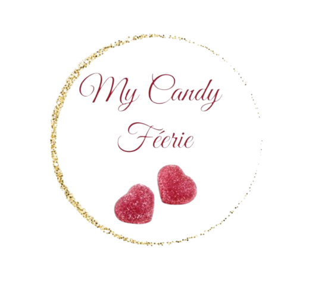
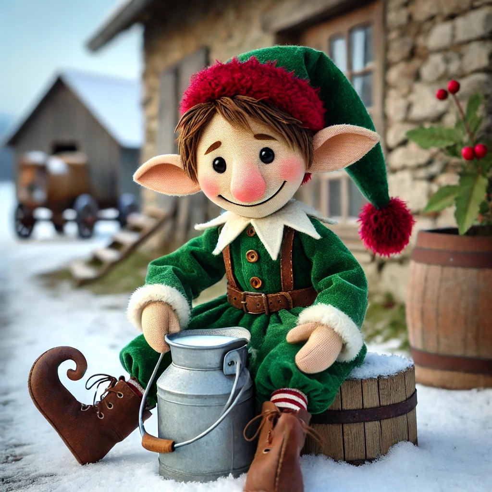
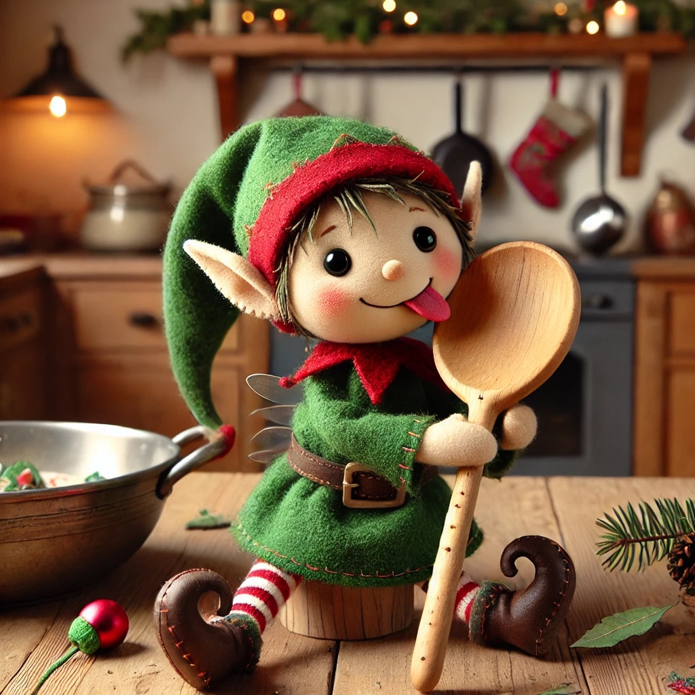
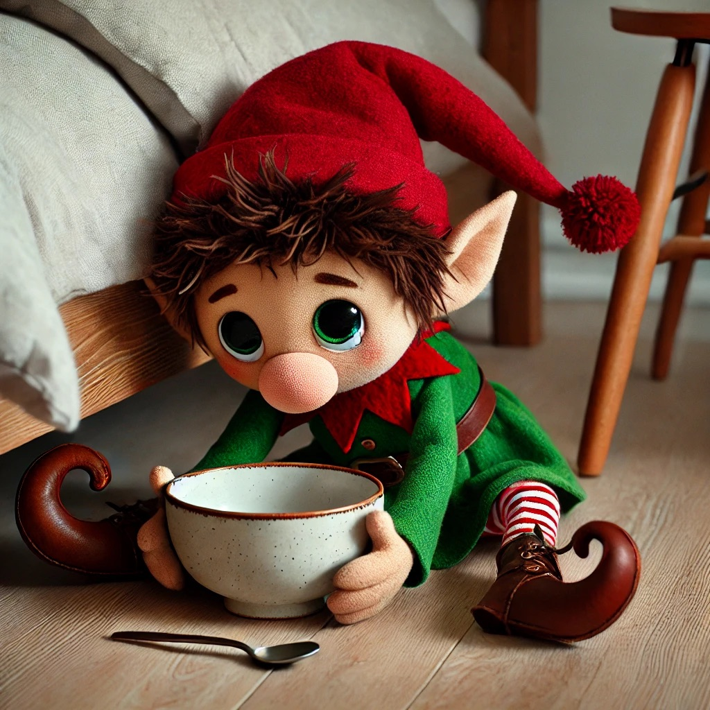
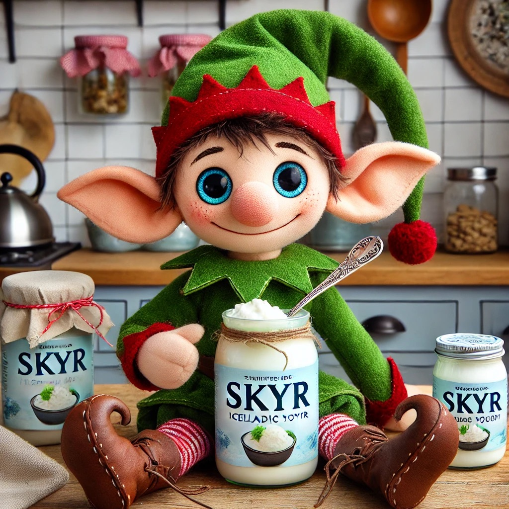
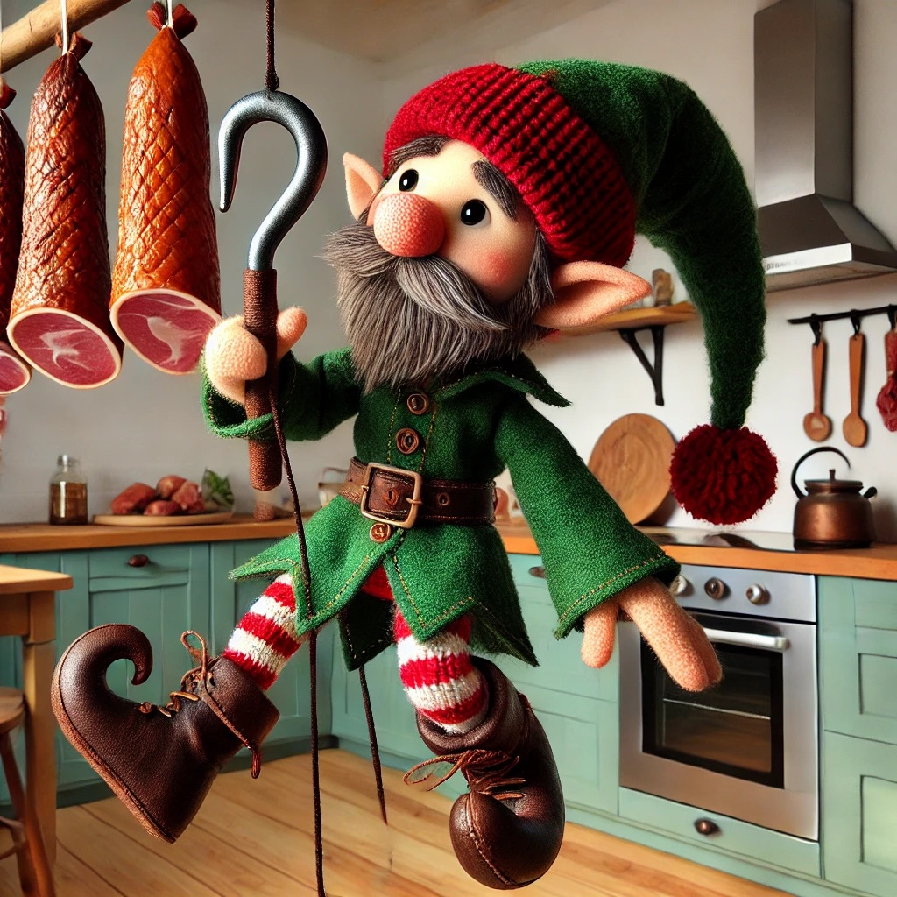

Heureux de te rencontrer! nous sommes
LES 13 LUTINS ISLANDAIS
Ces 13 lutins, avec leur caractère farceur, sont ravis de partager leurs aventures grâce à la boutique mycandyfeerie® . Découvrez la personnalité de chacun d'entre eux.
Patmollet
C’est le premier à arriver. Il adore embêter les moutons dans les fermes et essaie de voler leur lait. Mais il a un problème : ses jambes sont toutes raides, ce qui le rend un peu maladroit !

Lèche-lait
Ce lutin se cache près des fermes et attend le bon moment pour voler du lait. Il adore se faufiler en douce dans les granges.
Petit-Bout
Comme son nom l'indique, c’est le plus petit des lutins. Il adore chercher les restes de nourriture au fond des casseroles et des poêles.

Lèche-cuillère
Ah, celui-là adore les cuillères en bois ! Dès que quelqu’un a fini de cuisiner, il surgit pour lécher toutes les cuillères. Un vrai gourmand !
Racle-pot
Dès que quelqu’un oublie une casserole avec des restes dedans, il arrive en courant pour la racler et tout manger.

Lèche-bol
Il adore se cacher sous les lits et guette les bols. Si quelqu’un en pose un par terre, hop ! Il sort de sa cachette pour tout lécher.
Claque-porte
Lui, c’est un vrai farceur bruyant. En pleine nuit, il s’amuse à faire claquer les portes très fort, juste pour effrayer tout le monde !

Goinfre-de-skyr
Son pêché mignon, c’est le skyr, un délicieux yaourt islandais. Il en vole partout où il peut en trouver, il ne s'en lasse jamais !
Vole-saucisse
Ce lutin est un spécialiste des saucisses. Il grimpe jusqu’aux fumoirs où elles sont suspendues et les vole une par une pour les dévorer.

Espion-fenêtre
Celui-là adore regarder par les fenêtres pour voir ce que les gens font à l’intérieur. S’il repère quelque chose de bon, il essaiera de le voler !
Renifle-porte
Ce lutin a un nez énorme, et il sent tout, même à travers les portes. Il renifle l'odeur du laufabrauð, un pain traditionneldais, et dès qu’il en trouve, il le vole.

Crochet-viande
Il se promène avec un crochet pour attraper les morceaux de viande fumée suspendus dans les cuisines. Gare à vos provisions !
Vole-bougie
Le dernier à arriver. Il suit les enfants qui portent des bougies et les vole. Avant, les bougies étaient faites de graisse animale, donc elles étaient comestibles... miam !
Les 13 lutins espèrent que leurs aventures t'ont amusé et émerveillé ! Grâce à la boutique mycandyfeerie® , leur magie continue. Leur apparence peut varier... tu peux même en adopter un ! Essaie de deviner quel lutin t'accompagne, ou regarde sa carte pour découvrir qui il est vraiment. " psss... demande à Maurine, peut être que tu peut avoir celui que tu veux !"